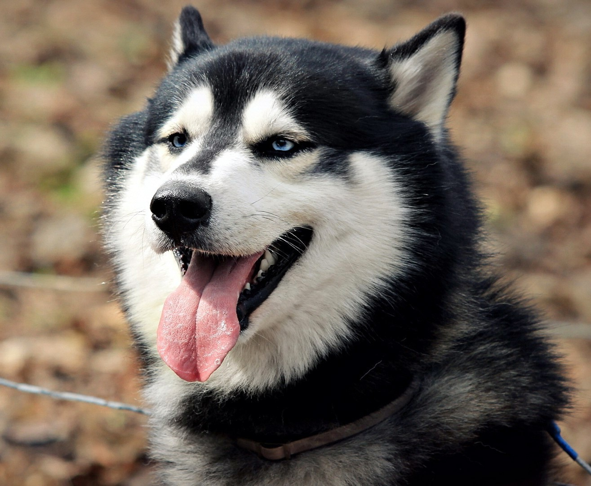
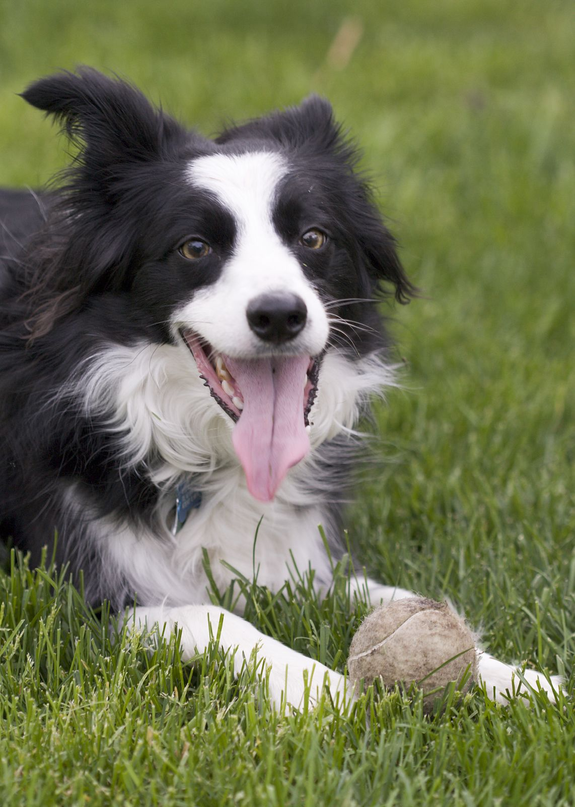

There's a dog for everything to be honest. Some of my personal favorite "work dogs" are the following:
St. Beneard: Rescueing people in snowy mountians
Golden Retriver: Classic dog. Hunting and bringing back fowl
"Wiener" Dachshund: Hunt badgers and other burrow living critters
Greyhound: Chasing game and, less ethical, racing
There are of course plenty of other dog breeds out there. I'll list more of my favorites
The Husky Dog
Cold, active, and fast

These dogs actually come in other colors other than black. Like red or blounde. Trainable to do almost anything. Although they shed alot during the summer. Be sure to groom these dogs if you get one.
These dogs were bred to pull sleds, but last time I tried that the dog just stared at me. So I think you'll have to train them to pull you. I see these dogs everywhere, so they shouldn't cost too much. Lovely dog. My negbhior has one and never uses it's leash.
The Border Collie Dog
Smart herder

These dogs actually come in other colors other than black. Like dots or blounde and even brown. These dogs were bred in borders between Scotland and England. Thus the name, border collie. That's pretty clever. These dogs are also pretty smart and trainable
I don't why, but I've always loved this dog breed. The pictures of them can be so silly. Are they the silliest of dogs? Maybe, though every breed of puppy is silly lol. Great farmer dog too.